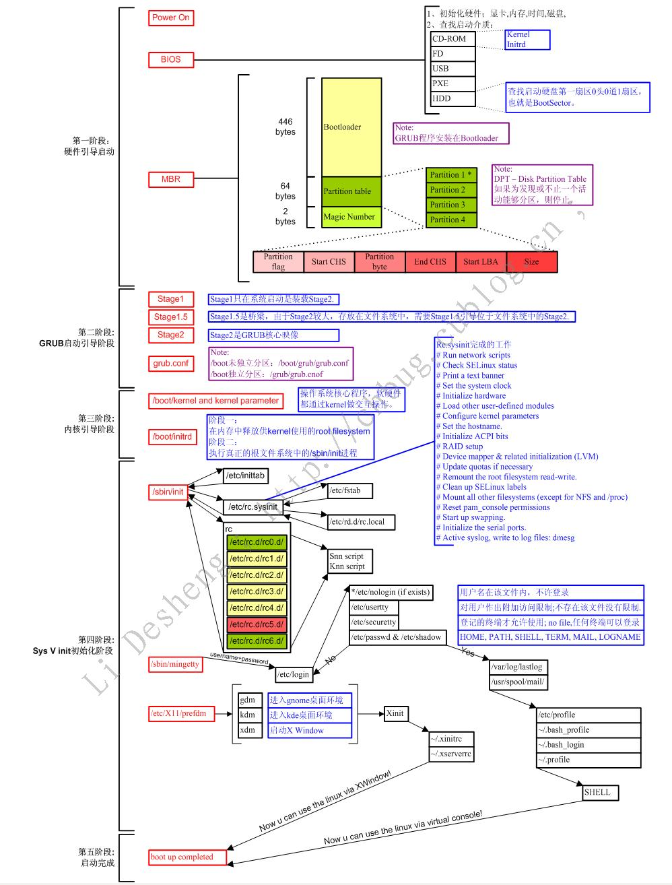

Contents
Linux
Linux 基础
基本常识
- Linux将设备都当成文件来处理
-
Linux登录过程中加载配置文件顺序
- /etc/profile → /etc/profile.d/*.sh → ~/.bash_profile → ~/.bashrc → [/etc/bashrc]
- Linux启动图解

-
Linux的内核版本号
- major.minor.patchlevel
- major表示主版本号
- minor表示次版本号；为偶数时表示该内核为稳定发布版本
- patchlevel表示对当前内核版本的修订次数
- 例如：kernel 2.0.30
- 版本信息：/proc/version 文件中
- 可以使用命令，查看系统内核版本号及系统名称
- 方法一：uname -a
- 方法二：cat /proc/version
-
Linux用户和用户组的概念
- id命令可以显示目前登录账户的有效用户ID和组ID，以及所属分组及用户名。
-
用户
- 用户是能够获取系统资源的权限的集合.
- 1. linux用户的分类
- 管理员root:具有使用系统所有权限的用户,其UID为0.
- 普通用户:即一般用户,其使用系统的权限受限,其UID为500-60000之间.
- 系统用户:保障系统运行的用户,一般不提供密码登录系统,其UID为1-499之间.
- 2. 与用户有关的文件/etc/passwd，/etc/shadow
- /etc/passwd文件
- 其格式：account：password：UID:GID:GECOS:diretory:shell
- account:用户名或帐号
- password：用户密码占位符
- UID：用户的ID号
- GID：用户所在组的ID号
- GECOS:用户的详细信息（如姓名，年龄，电话等）
- diretory：用户所的家目录
- shell：用户所在的编程环境
- /etc/shadow:其格式
- account：password：最近更改密码的日期：密码不可更该的天数：密码需要重新更改的天数：密码更改前的警告期限：密码过期的宽限时间：帐号失效日期：保留
-
用户组
- 1. 用户组分类
- 普通用户组:可以加入多个用户
- 系统组:一般加入一些系统用户
- 私有组(也称基本组):当创建用户时,如果没有为其指明所属组,则就为其定义一个私有的用户组,起名称与用户名同名.
- 注:私有组可以变成普通用户组,当把其他用户加入到该组中,则其就变成了普通组
- 2. 组是权限的容器
- 如普通用户 a,b,c 所属组grp,则它们会继承组grp的权限
- 3. 与组有关的文件:/etc/group，/etc/gshadow
- /etc/group文件：其格式:group_name:passwoerd:GID:user_list
- group_name:组名
- passwoerd:组密码
- GID:组的ID号
- user_list：以group_name为附加组的用户列表
-
修改用户及用户组的命令：useradd，usermod， groupdd，userdel
- 1. 增加用户：useradd [options] username
- options：
- -u ：UID
- -g ：GID
- -d ：指定用户家目录，默认是/home/username
- -s ：指定用户所在的shell环境
- -G：指定用户的附加组
-
例如增加一用户wendy UID为1888 家目录/home/oracle，shell为/bin/sh
# useradd –u1888 –d/home/oracle –s/bin/sh wendy
- 2. 修改用户：usermod [options] username
- options：
- -u ：UID
- -g ：GID
- -d ：指定用户家目录，默认是/home/username
- -m 与-b 一起用表示把用户家目录的内容也移走
- -s ：指定用户所在的shell环境
- -G：指定用户的附加组
-
例如修改用户wendy UID为1000 家目录/oracle，shell为/bin/bash
# usermod –u 1000 –d /oracle –s /bin/bash -m wendy
- 3. 增加用户组：groupadd [options] groupname
- options
- -g ：GID
-
例如增加用户组grp UID为1001
# groupadd –g 1001 grp
- 4. 删除用户：userdel [options]username
- options
- -r ：连同家目录一起删除
-
例如删除用户wendy及家目录
# userdel –r wendy
-
安装目录
-
一般程序的安装文件都在/usr/share/下；
- 可运行程序一般在/usr/bin/下；
- 库在/usr/lib/下。
-
自己下载的压缩包或者编译的包，有些可以选择安装目录，
- 一般放在/usr/local/
- 也有在/opt/下
-
一般程序的安装文件都在/usr/share/下；
-
grub配置文件
-
grub的配置文件
- 主要是/boot/grub/grub.conf
- /boot/grub/menu.list是这个文件的软连接（soft link）。
-
grub2文件结构
- /boot/grub/grub.cfg文件
- /etc/grub.d/文件夹
- /etc/default/grub文件
-
grub的配置文件
-
Linux下的文件
-
~/.bash_history
- 存放了shell的历史命令。
-
/etc/shadow
- 为加密的口令文件，其中用户登录项的第六个字段为用户的起始目录。
-
~/.bash_history
-
ubuntu下创建快捷方式
-
/usr/share/applications/ //快捷方式所在目录
[Desktop Entry] //每个desktop文件都以这个标签开始，说明这是一个Desktop Entry文件 Version = 1.0 //标明Desktop Entry的版本（可选） Name = Firefox //程序名称（必须），这里以创建一个Firefox的快捷方式为例 GenericName = Web Browser //程序通用名称（可选） Comment = A Web Browser //程序描述（可选） Exec = firefox %u //程序的启动命令（必选），可以带参数运行,当下面的Type为Application，此项有效 Icon = firefox //设置快捷方式的图标（可选） Terminal = false //是否在终端中运行（可选），当Type为Application，此项有效 Type = Application //desktop的类型（必选），常见值有“Application”和“Link” Categories = GNOME;Application;Network; //注明在菜单栏中显示的类别（可选） Categories=Development;
- 保存，后把文件改位"XXXX.desktop",设置属性为可运行勾上。
-
例如：
[Desktop Entry] Encoding=UTF-8 Name=Eclipse Comment=Eclipse SDK Exec=/opt/eclipse/eclipse Icon=/opt/eclipse/icon.xpm Terminal=false Type=Application Categories=Development;
-
/usr/share/applications/ //快捷方式所在目录
-
ubuntu 面板恢复
- 作为一个 Ubuntu 用户，当你用 Ubuntu/Gnome 的时候，总有（总会有）换主题，换窗口管理器，或折腾 Dock （比如流行的 Gnome-do ）的时候，总有一天，折腾来折腾去，你发现，面板不见了，不是默认的布局了，也找不回来，下面是解决办法。 *打开终端，终端窗口打开之后，立即在提示符后面输入下列命令：
- $ gconftool --recursive-unset /apps/panel
- （注意：每个斜杠 “/” 后面没有空格）
- 接下来输入下列命令：
- $ rm -rf ~/.gconf/apps/panel
- 最后还需要执行：
- pkill gnome-panel
- 接下来，Ubuntu 默认的上下两栏面板就会恢复默认值，出现顶部+底部各一面板的默认布局。
基本命令
-
＄表示shell接受普通用户权限可执行的命令；
- #表示shell可执行管理员权限的命令。
-
shell命令
- command[-options][arg1][arg2]...[arg/V]
- command表示命令名
- -options表示相应命令的选项
- arg1到arg/V表示命令的参数。
- 命令行采用空格来分隔每个元素。
-
通常
- 选项名称是完整的英文字符串，选项名称前面都会有两个连接符号“--”，如--help；
- 选项名称为一个字符是，选项名称前面会有一个连接符号“-”，如-f。-f--force一样。
-
组合键
- ctrl+a：将光标移动到命令行的开始位置
- ctrl+e：将光标移动到命令行的末尾位置
- ctrl+c：删除整行，并换到下一新行
- ctrl+l：清屏，并从屏幕的最上面开始新的一行
- ctrl+d：文件结束标志
- ctrl+s：锁定终端
- ctrl+q：恢复锁定的终端
- ctrl+u：删除光标前的内容
- ctrl+k：删除光标后的内容
- man命令
-
cd命令
- .表示当前的工作目录
- ..表示当前工作目录的上一级目录
- ~表示当前使用shell用户的主文件夹
- -表示返回到上次执行cd命令之前的目录
-
ls命令
- -a或者—all表示显示指定目录下的所有文件和目录
- -l将文件和目录的详细信息列出来
- -R递归显示下级子目录
-
touch命令
- 用来修改文件的创建时间或修改时间。
- 若文件不存在，则会自动添加一个空文件。
-
echo命令
- echo "XXX">newfile
- 将字符串“XXX”输入一个名为newfile的新文件中。
-
cat命令
- 显示文件的内容
-
mkdir命令
- 创建目录
- -m或者—mode设置权限模式
-
复制命令cp
- 复制文件或目录
- -n不要覆盖已存在的文件（-i使用时失效）
- -i覆盖前询问
- -r递归拷贝(复制目录下的所有文件和子目录)
- cp[选项] 源文件 目标文件
-
移动命令mv
- mv为文件或目录改名，或将文件移动
- -n不要覆盖已存在的文件
- mv [选项] 源文件 目标文件
- mv [选项] 源文件.. 目录
-
rm命令
- 删除文件或目录
- -r递归删除目录及其内容
- -i删除前确认
-
rmdir命令
- 只能删除空目录
-
pwd命令
- 显示当前路径。
- fsck 命令来查看Linux文件系统上的磁盘碎片情况
-
diff命令
- diff test1.txt test2.txt
- 该命令用来逐行比较两个文本文件的内容，并列出两个文件中不同的行；
- 若执行结果为空，说明相比较的两个文件完全一致。
-
chmod命令
- chmod [options] mode files
-
Options
- -c只输出被改变文件的信息
- -R，--recursive可递归遍历子目录，把修改应到目录下所有文件和子目录
-
mode可以是数字形式或以who opcode permission形式表示。
- 1. who
- u文件或目录的当前用户
- g文件或目录的当前群组
- o其他之外的用户和群组
- a所有用户和群组（默认）
- 2. opcode
- +增加权限
- -删除权限
- =重新分配权限
- 3. permission
- r读取权限
- w写入权限
- x执行权限
- -不具有任何权限
- s特殊权限
- 4读 2写 1执行
- 4. 例如：
- wop形式：chmod u+x file给file的当前用户增加执行权限
- 数字形式：chmod 751 file给file的u分配读写执行权限，g分配读执行权限，o分配执行权限；与chmod u=rwx，g=rx，o=x file命令相同
-
gzip命令
- 默认时gzip命令将源文件压缩为gz文件，并删除源文件
- -v输出处理信息
- -d解压缩指定文件
-
rar命令
- rar <子命令> [选项] 操作文档 [文件..] [解压路径]
-
子命令
- a添加文档到操作目录（压缩）
- d从文档中删除文件
- e将文档解压到当前目录（如果解压路径不写）
-
选项
- --df文档操作后删除源文件
- --p设定密码
- -t压缩完毕后进行完整性检验
-
tar命令
- tar命令支持tar、gz、bz2
- tar -c|x|u|r|t[z|j][v] -f<压缩包名>[未打包文件]
-
-c创建压缩文件
- -x解压缩文件
- -u仅转换比备份文件新的内容
- -r新增文件至已存在压缩包的结尾部分
- -t列出压缩包的内容
- -A将tar文件添加到压缩包中
-
-z使用gz压缩格式
- -j使用bz2压缩格式
- -v显示过程
-
-f<压缩包名>归档文件的文件名
- 例如：
-
1. 将当前目录下的全部文件压缩到test.tar.gz中
# tar -czvf test.tar.gz *
-
2. 列出压缩包test.tar.gz的内容，但不解压
# tar -tzvf test.tar.gz
-
3. 将test.tar.gz解压到当前目录
# tar -xzvf test.tar.gz
-
adduser命令
- --home在指定目录下建立所有的用户登录目录
- --ingroup指定用户组
- sudo adduser sunny建立名为sunny的主目录
- sudo adduser --ingroup sunny sommy建立名为sommy用户，添加到sunny组中
-
su命令
- ubuntu下默认不允许root用户直接登陆，但可以从一个比root级别低，比普通用户级别高的用户使用：
- sudo su将用户身份变更为root超级用户的身份
- sudo选项
- -b将要执行的命令放到背景中执行
- -s执行环境变量中的SHELL所指定的shell
- -H将环境变量中的HOME指定为要变更身份的用户家目录（若不加-u，则是系统管理者root）
- sudo -sH进入root超级用户的操作环境
-
login命令
- login [用户名]
- 切换用户，需要输入两次密码
-
logout命令
- 退出系统，返回到系统登录界面
-
halt命令
- -f强制关闭系统
- -i在执行halt命令之前关闭全部的网络接口
- -p在halt命令之后执行poweroff命令
- sudo halt -p 直接关闭系统
-
shutdown命令
- shutdown [选项] [-t 秒数] 时间 [警告信息]
-
选项
-c取消前一个shutdown命令
- -h将系统关机
- -k只是送出信息给用户，不会真正关机
- -r关机之后重新启动
- -t 秒数 设置送出警告信息和关机信号之间要延迟多少秒
-
时间：多久后执行shutdown命令
- +m表示在m分钟后执行
- hh：mm表示在hh：mm时刻执行
-
警告信息 传送给所有登录用户的信息
-
例如：
# sudo shutdown -h now //立即关闭系统 # sudo shutdown -h +10 & //十分钟后关机，并后台执行的方式运行 # sudo shutdown -h 23：30 //在23：30时关闭系统 # sudo shutdown -c //取消shutdown命令
-
例如：
-
reboot命令
- reboot[选项] 重启系统
- reboot -n 保存数据后重启
-
deb软件包命令
-
通过deb软件包管理机制，可以生成两种类型的软件包：二进制软件包（deb），源码包（deb-src）
- deb软件包命名规范：
- 程序名_版本号-修订版本号_计算机架构.deb
- 软件包状态：
- 用户不断安装、卸载软件包，为了记录用户的行为，对软件包定义了两种状态：期望状态和当前状态。
-
dpkg命令
- dpkg [选项] filename
- -l查询系统中已安装的软件包的信息
- -L查询指定软件包的路径信息
- -s查询已安装的指定软件包的信息
- -i安装指定的软件包
- -I查询未安装的指定软件包的信息
- -c罗列出软件包的所有文件
- -r删除指定软件包，但不删除配置文件
- -P删除指定软件包，删除配置文件
- deb安装包安装的程序默认安装在文件：配置文件在/etc目录，可执行文件在/usr/bin目录，文档在/usr/share/man目录中。
-
apt命令
- apt-get用于管理软件包，包括下载、安装、删除和升级等操作
- apt-cache查询软件包信息
- 1. apt-cache 子命令 [选项] [软件]
- 1.1 子命令
- search搜索所需的软件包
- depends查询指定软件包的依赖关系
- stats查询软件源信息
- 2. apt-get 子命令 [选项] [软件]
- 2.1 子命令
- update更新软件源
- upgrade升级系统中的所有软件包
- install下载所需软件包并进行安装
- remove删除指定软件包
- source下载源码包
- dist-upgrade升级系统
- 3. 选项
- -d下载软件包，但是不安装
- -f修复已安装的应用程序
- --purge与remove一起使用，清楚软件包
- --reinstall与install一起使用，重新安装软件包
- -b在下载完源码包后，编译生成相应的软件包
- 4. apt-get详解
- 通过apt-get命令下载的软件包，放在/var/cache/apt/archives 目录下
- 下载文件位置可以在/etc/apt/source.list文件中指定
- 通过apt-get autoclean 命令就可以删除存放在该地的软件包
-
5. 为apt-get配置更新源
# sudo gedit /etc/apt/sources.list
-
通过deb软件包管理机制，可以生成两种类型的软件包：二进制软件包（deb），源码包（deb-src）
-
进程管理命令
-
ps命令
- ps[选项]
- -A显示所有进程，等价与-e
- more命令，grep命令
- 使用more命令进行分布
-
使用grep命令搜索所需进程
$ ps -e | more //所出结果分页显示 $ ps -e | firefox //搜索firefox进程
-
kill命令
- kill[选项]PID
- -l显示信号的名称列表
- 当直接指定PID无法结束进程时，使用-9选项，代表传送出SIGKILL信号
- ps aux | grep firefox查看firefox进程的信息
-
top命令
- 动态显示进程命令
- 选项
- -d N，-d 3 表示两次刷新时间间隔为3秒
- -q表示top没有任何延迟地进行刷新
- 子命令
- k终止一个进程。在top界面中按下K键，界面中显示“PID to Kill”，输入需要终止进程的PID（查看PID，使用”shift+,”向下翻阅，使用“shift+。”向上翻阅），按下回车，界面中显示“Kill PID XXX with signal [15]”输入信号，按下回车。
- P根据CPU使用百分比大小进行排序
- M根据驻留内存大小进行排序
- U根据用户过滤进程信息
-
nice命令
- 设置程序的谦让度
-
ps命令
-
作业控制命令
-
&
- 在命令后加&，将作业以后台作业的方式运行
-
ctrl+z
- 将前台作业暂停放置于后台
-
jobs命令
- 查看后台作业
- -l列出作业的所有属性
- -r仅显示在后台运行的作业
- -s仅显示在后台暂停的作业
-
fg命令
- 将后台作业切换到前台
-
bg命令
- 激活暂停的后台作业
-
&
-
网络管理命令
-
ifconfig命令
- ifconfig显示网卡信息
- 启动网卡ifconfig eth0 up
- 设置网卡IP和掩码ifconfig eth0 192.168.1.1 netmask 255.255.255.0
- 修改只是暂时的，重启后就不起作用了
-
netstat命令
- 显示路由表netstat -r
- 显示接口表netstat -i
-
route命令
- route [add] [net|host] targetaddress [netmask Nm][dev If]
- route [delete] [net|host] targetaddress [gw Gw] [netmask Nm][dev If]
- add增加路由 delete删除路由 net路由到达的网络 host路由到达的主机
- netmask子网掩码 gw指定路由的网关 dev强迫路由链指定接口
-
netstat命令
- 通过netstat可以显示网络连接、路由表和网络接口信息，可以让用户得知目前都有哪些网络连接正在运作。
- 1. 与路由 (route) 有关的参数说明：
- -r ：列出路由表(route table)，功能如同 route 这个指令；
- -n ：不使用主机名称与服务名称，使用 IP 与 port number ，如同 route -n
- 2. 与网路介面有关的参数：
- -a ：列出所有的连线状态，包括 tcp/udp/unix socket 等；
- -t ：仅列出 TCP 封包的连线；
- -u ：仅列出 UDP 封包的连线；
- -l ：仅列出有在 Listen (监听) 的服务之网路状态；
- -p ：列出 PID 与 Program 的档名；
- -c ：可以设定几秒钟后自动更新一次，例如 -c 5 每五秒更新一次网路状态的显示；
- -v ：显示正在进行的工作
- 3. 共有12中可能的状态:
- LISTEN:首先服务端需要打开一个socket进行监听，状态为LISTEN.
- SYN_SENT:客户端通过应用程序调用connect进行active open.于是客户端tcp发送一个SYN以请求建立一个连接.之后状态置为SYN_SENT.
- SYN_RECV:服务端应发出ACK确认客户端的SYN,同时自己向客户端发送一个SYN. 之后状态置为SYN_RECV
- ESTABLISHED: 代表一个打开的连接，双方可以进行或已经在数据交互了。
- FIN_WAIT1:主动关闭(active close)端应用程序调用close，于是其TCP发出FIN请求主动关闭连接，之后进入FIN_WAIT1状态.
- CLOSE_WAIT:被动关闭(passive close)端TCP接到FIN后，就发出ACK以回应FIN请求(它的接收也作为文件结束符传递给上层应用程序),并进入CLOSE_WAIT.
- FIN_WAIT2:主动关闭端接到ACK后，就进入了 FIN-WAIT-2 .
- LAST_ACK:被动关闭端一段时间后，接收到文件结束符的应用程序将调用CLOSE关闭连接。这导致它的TCP也发送一个FIN,等待对方的ACK.就进入了LAST-ACK .
- TIME_WAIT:在主动关闭端接收到FIN后，TCP 就发送ACK包，并进入TIME-WAIT状态。
- CLOSING: 比较少见.
- CLOSED: 被动关闭端在接受到ACK包后，就进入了closed的状态。连接结束.
- UNKNOWN: 未知的Socket状态
-
ifconfig命令
-
模块功能相关命令
-
禁用\启用触摸板
$ sudo rmmod psmouse//禁用 $ sudo modprobe psmouse //启用
-
禁用蓝牙模块
$ sudo rfkill block bluetooth
-
禁用\启用触摸板
-
其他命令
- who - show who is logged on
-
mesg - control write access to your terminal
- set 'no' for root user that it's useless
-
write — send a message to another user
- write user [tty]
-
wall — write a message to users
- wall [-n] [-t TIMEOUT] [file]
- displays the contents of file or,
- by default, its standard input,
- so,if you use standard input,
- you should type ^D when you have done
-
ntpdate - update the time
# ntpdate cn.pool.ntp.org //从ntp服务器获取网络时间 # rdate -s time.nist.gov //获取网络时间
-
which - 查看可执行文件的位置
-
查看ls的位置
$ which ls /bin/ls
-
查看ls的位置
-
alias - 查看和设置命令别名
-
查看命令别名
$ alias alias alert='notify-send --urgency=low -i "$([ $? = 0 ] && echo terminal || echo error)" "$(history|tail -n1|sed -e '\''s/^\s*[0-9]\+\s*//;s/[;&|]\s*alert$//'\'')"' alias egrep='egrep --color=auto' alias fgrep='fgrep --color=auto' alias grep='grep --color=auto' alias l='ls -CF' alias la='ls -A' alias ll='ls -alF' alias ls='ls --color=auto'
-
设置命令 s 别名,其功能与 ls 一样
$ alias s='ls --color=auto'
- 设置全局别名，添加语句到~/.bashrc
-
查看命令别名
-
runlevel - 查看启动级别
$ runlevel N 2
-
其他经验
-
系统提示
- sudo: unable to resolve host DobMa
- 解决方法：/etc/hosts
- 添加 127.0.0.1 DobMa
-
系统提示
命令小常识
- 命令全写
- loding...
基本工具
Vi
- VI有三种基本的工作模式：命令模式、插入模式、末行命令模式。
- 命令模式--插入模式：i、a、o；插入模式--命令模式：Esc
- 命令模式--末行命令模式：输入冒号(:)；末行命令模式--命令模式：Esc
-
命令模式
- 启动vi编辑器后的初始模式。
- 使用隐式命令的形式来对文档的内容进行编辑、移动光标和滚动屏幕，不接收键盘输入编辑文档。
- h光标左移，同行中移动；backspace光标左移，同段中移动
- l光标右移，同行中移动；space光标右移，同段中移动
- k光标上移一行
- j光标下移一行；或者enter
- w光标右移至下一个字字首；或者e
- b光标左移至下一个字字首
- (光标移至句首
- )光标移至句尾
- {光标移至段首
- }光标移至段尾
- nG光标移至第n行行首
- H光标移至屏幕顶行 M光标移至屏幕中间 L光标移至屏幕最后行
- dd删除当前光标所在行
- x删除当前光标前字符
- yy复制当前光标所在行到缓冲区
- p将缓冲区字符粘贴到光标所在位置
- /pattern从光标所在位置向文件尾搜索第一个pattern
- ?pattern从光标所在位置向文件首搜索第一个pattern
-
插入模式
- 只有在插入模式下才可以进行文字的输入操作。
- 从命令向插入模式切换的命令：
- i从光标所在位置前插入新的字符；I从光标所在行的行首开始插入新的字符
- a从光标坐在位置的下一个字符前插入新的字符；A从光标所在行的行尾开始插入新的字符
- o新增加一行，并将光标移动到上一行的开头插入字符；O在当前行上面增加一行,并将光标移动到上一行的开头处
-
末行命令模式
- :n1,n2 co n3将n1行到n2行之间的内容复制到n3行下
- :n1,n2 m n3将n1行到n2行之间的内容移动到n3行下
- :n1,n2 d将n1行到n2行之间的内容删除
- :w保存当前文件
- :w!强行保存当前文件
- :e!将文件还原到最原始的状态
- :x保存当前文件并退出或者：wq
- :q退出VIM/VI
- :q!不保存并强制退出VIM/VI
- :r[filename]将filename文件内容加到光标所在行的后面
- :set nu在文件中显示行号
- :%!xxd ---->切换到十六进制显示
- :%!xxd -r ---->切回文本方式显示
-
VIM/VI命令
- vim/vi [选项] [文件列表]
- +num打开时将光标移动到num行，第一个文件
- -oN打开N个窗口；多窗口之间切换ctrl+w+j组合键
-
Vi 小技巧
-
在vim中保存正在编辑的文件而不需要必要的权限
:w !sudo tee %
- 查阅vim的文档(:help :w),会有命令:w!{cmd},即让vim执行一个外部{cmd}
- tee是一个把stdin保存到文件的小工具
- %，是vim当中一个只读寄存器的名字，总保存着当前编辑文件的文件路径
- 所以执行这个命令，就相当于从vim外部修改了当前编辑的文件.
- loding...
-
在vim中保存正在编辑的文件而不需要必要的权限
-
VIM Promote
- This is my .vimrc file,.vimrc,i use the Vundle to manage my vim plugin
-
You can take the command:
:BundleList -列举出列表中(.vimrc中)配置的所有插件 :BundleInstall -安装列表中全部插件 :BundleInstall! -更新列表中全部插件 :BundleSearch foo -查找foo插件 :BundleSearch! foo -刷新foo插件缓存 :BundleClean -清除列表中没有的插件 :BundleClean! -清除列表中没有的插件
gcc
-
gcc的文件类型约定
- .c C语言源代码文件
- .C、.cc、.cxx C++源代码文件
- .m Objective-C源代码文件
- .s汇编语言源代码文件
-
gcc的4个阶段
- 预处理(preprocessing)：生成.i为后缀的预处理文件
- 编译(compilation):生成.s为后缀的文件
- 汇编(assembly):生成.o为后缀的目标文件
- 链接(linking):生成可执行文件
-
gcc命令
- gcc [选项] 文件...
- -g将调试信息添加到程序中
-
-o outfile指定输出的文件名
gcc -E file.c -o file.i //-E预处理 gcc -S file.i -o file.s //-S编译成汇编代码 gcc -c file.s -o file.o //-c汇编成目标文件 gcc file.o -o file //链接，生成可执行文件 gcc file.c -o file //一次性完成四个阶段 ./file //运行可执行程序
-
警告提示功能
- -pedantic选项能够帮助程序员发现一些不符合ANSI/ISO C标准的代码
- -Wall选项能够使gcc产生尽可能多的警告信息
- -Werror选项能够使gcc在所有产生警告的地方停止编译
-
代码优化
- 指编译器通过分析源代码，找出其中尚未达到最优的部分，然后对其重新进行组合，改善程序的执行性能。
- 在开发的时候、程序在运行时能申请到内存资源非常紧张、跟踪调试的时候最好不要使用优化选项。
- “time ./file”命令可以大致统计出程序在运行时所需要的时间
- real进程总的执行时间
- user进程中用户指令的执行时间
- sys进程中内核代用户指令执行的时间
- -On选项来控制优化代码的生成，n代表优化级别；从0变化到2或3
-
连接库
- .so动态链接库：程序执行时所需的代码是在运行时动态加载的
- .a静态链接库：程序执行时所需的代码时在编译时静态加载的
- 在Linux下开发软件时，一般要使用第三方函数库。
- Linux下大多数函数头文件的默认路径时/usr/include/，库文件的默认路径是/usr/lib/。
-
但是并不是所有的情况都是这样的，所以使用gcc编译时，要指定所需要的头文件和库文件的路径
"gcc -I /... file.c -o file" //指定gcc在目录/...下有所需头文件 "gcc -L /... -lfoo file.c -o file" //指定在目录/...下的libfoo文件作为所需头文件 "gcc -L /... -static -lfoo file.c -o file" //强制链接时使用静态链接库
-
调试选项
- -g在编译时生成调试符号信息
Makefile
-
makefile写法
- Makefile是用于自动编译和链接的 ,一个工程有很多文件组成,每一个文件的改变都会导致工程的重新链接,但是不是 所有的文件都需要重新编译,Makefile中纪录有文件的信息,在 make时会决定在链接的时候需要重新编译哪些文件.
- Makefile的宗旨就是：让编译器知道要编译一个文件需要依赖其他的哪些文件.当那些依赖文件有了改变,编译器会自动的发现最终的生成文件已经过时,而重新编译相应的模块.
-
利用 GNU Autoconf 及 Automake 这两套软体来协助我们『自动』产生 Makefile 文档
- 只需写一些预先定义好的巨集 (macro)，交给 Automake 处理後会产生一个可供Autoconf 使用的 Makefile.in 文档
- 再配合利用Autoconf 产生的自动设定档 configure即可产生一份符合 GNU Makefile惯例的 Makeifle 了
- 1. 创建一个目录，存放程序和相关文件，cd到目录下
-
用 autoscan 产生一个 configure.in 的雏型，执行 autoscan 後会产生一个configure.scan 的档案，我们可以用它做为configure.in档的蓝本
$ autoscan $ ls autoscan.log configure.scan hello.c
-
2. 编辑 configure.scan 文档，如下所示，并且把它的文档名改成configure.in
AC_INIT(hello.c) AM_INIT_AUTOMAKE(hello, 1.0) ... AC_OUTPUT(Makefile)
-
3. 执行 aclocal 和 autoconf ，分别会产生 aclocal.m4 及 configure 两个档案
$ aclocal $ autoconf $ ls autom4te.cache autoscan.log configure configure.in hello.c
- 4. 新建Makefile.am
-
内容如下:
AUTOMAKE_OPTIONS=foreign bin_PROGRAMS=hello helloworld_SOURCES=hello.c
- 5. 执行autoheader,生成config.h.in
-
6. 运行automake,产生一些文件,包含最重要的 Makefile.in
$ automake --add-missing
-
7. 执行configure生成Makefile
$./configure
-
8. 使用Makefile编译代码
$make
-
9. 运行helloworld
$ ./helloworld
-
深入浅出
-
autoscan
- autoscan是用来扫描源代码目录然后生成configure.scan文件的.
- autoscan可以用目录名做为参数,但如果你不使用参数的话,那么autoscan将认为使用的是当前目录.
- autoscan将扫描你所指定目录中的 源文件,并创建configure.scan文件.
-
configure.scan/configure.in
- configure.scan包含了系统配置的基本选项,里面都是一些宏定义.我们需要将它改名为configure.in.
- configure.in文件的内容是一些宏,这些宏经过autoconf处理后会变成检查系统特性、环境变量、软件必须的参数的shell脚本.
- configure.in文件中的宏的顺序并没有规定。
- 在 configure.ini中：必须在所有宏的最前面和最后面分别加上AC_INIT宏和AC_OUTPUT宏.
-
写法：
AC_INIT(FILE)这个宏用来检查源代码所在的路径. AM_INIT_AUTOMAKE(PACKAGE, VERSION) //这个宏是必须的，它描述了我们将要生成的软件包的名字及其版本号： //PACKAGE是软件包的名字,VERSION是版本号. //当你使用make dist命令时,helloworld-1.0.tar.gz的软件发行包,其中就有对应的软件包的名字和版本号. AC_PROG_CC //这个宏将检查系统所用的 C编译器. AC_OUTPUT(FILE) AC_OUTPUT(Makefile) //这个宏是我们要输出的 Makefile的名字. //我们在使用automake时,实际上还需要用到其他的一些宏,但我们可以用aclocal来帮我们自动产生.执行aclocal后我们会得到aclocal.m4文件. //产生了configure.in和aclocal.m4 两个宏文件后,我们就可以使用autoconf来产生configure文件了. // #号表示注释,这个宏后面的内容将被忽略.
-
aclocal和autoconf
- aclocal是一个 perl 脚本程序.
- aclocal根据configure.in文件的内容,自动生成aclocal.m4文件.
- aclocal的 定义是 ："aclocal - create aclocal.m4 by scanning configure.ac".
- autoconf根据configure.in和aclocal.m4 两个宏文件，产生configure文件.
- configure是一个脚本,它能设置源程序来适应各种不同的操作系统平台,并且根据不同的系统来产生合适的 Makefile,从而可以使你的源代码能在不同的操作系统平台上被编译出来.
-
Makefile.am
- Makefile.am是用来生成Makefile.in的,需要你手工书写.
-
Makefile.am中定义了一些内容：
AUTOMAKE_OPTIONS //这个是 automake的选项.在执行automake时,它会检查目录下是否存在标准GNU软件包中应具备的各种文件,例如AUTHORS.ChangeLog.NEWS等文件. //我们将其设置成foreign时,automake会改用一般软件包的标准来检查. bin_PROGRAMS //这个是指定我们所要产生的可执行文件的文件名.如果要产生多个可执行文件,那么在各个名字间用空格隔开. binname_SOURCES //这个是指定产生"binname"时所需要的源代码.如果它用到了多个源文件,那么请使用空格符号将它们隔开. //比如需要helloworld.h,helloworld.c那么请写成:helloworld_SOURCES=helloworld.h helloworld.c. //如果在 bin_PROGRAMS定义了多个可执行文件,则对应每个可执行文件都要定义相对的filename_SOURCES.
-
举例:
AUTOMAKE_OPTIONS=foreign bin_PROGRAMS=hello hello_SOURCES=hello.c
-
automake
- 我们使用automake --add-missing来产生Makefile.in.
- 选项--add-missing的 定义是 "add missing standard files to package",它会让automake加入一个标准的软件包所必须的一些文件.
- 我们用automake产生出来的 Makefile.in文件是符合GNU Makefile惯例的。
- 接下来我们只要执行configure这个shell脚本就可以产生合适的 Makefile 文件了.
- 然后再使用make
-
一些基本操作
-
在符合GNU Makefiel惯例的 Makefile中,包含了一些基本的预先定义的操作
make //根据Makefile编译源代码,连接,生成目标文件,可执行文件. make clean //清除上次的 make命令所产生的 object文件（后缀为".o"的 文件）及可执行文件. make install //将编译成功的 可执行文件安装到系统目录中,一般为/usr/local/bin目录. make dist //产生发布软件包文件（即distribution package） //这个命令将会将可执行文件及相关文件打包成一个tar.gz压缩的 文件用来作为发布软件的 软件包. //它会在当前目录下生成一个名字类似"PACKAGE-VERSION.tar.gz"的文件. //PACKAGE和VERSION,是我们在 configure.in中定义的 AM_INIT_AUTOMAKE(PACKAGE, VERSION). make distcheck //生成发布软件包并对其进行测试检查,以确定发布包的正确性.
-
在符合GNU Makefiel惯例的 Makefile中,包含了一些基本的预先定义的操作
-
使用gcc_egcs
- 如果你有两个或少数几个 C 源文件，也可以方便地利用 GCC 编译、连接并生成可执行文件。
-
例如，假设你有两个源文件 main.c 和 factorial.c 两个源文件
$ gcc -o factorial main.c factorial.c
-
GCC 可同时用来编译 C 程序和 C++ 程序
- 一般来说，C 编译器通过源文件的后缀名来判断是 C 程序还是 C++ 程序。
- 在 Linux 中，C 源文件的后缀名为 .c，而 C++ 源文件的后缀名为 .C 或 .cpp。
-
调用 g++ 命令编译、连接并生成可执行文件：
$ g++ -o hello hello.C
-
autoscan
gdb
- GDB是GNU开源组织发布的一个强大的UNIX下的程序调试工具。或许,各位比较喜欢那种图形界面方式的,像VC、BCB等IDE的调试,但如果你是在UNIX平台下做软件,你会发现GDB这个调试工具有比VC、BCB的图形化调试器更强大的功能。所谓“寸有所长,尺有所短”就是这个道理.
-
一般来说,GDB主要帮忙你完成下面四个方面的功能:
- 启动你的程序,可以按照你的自定义的要求随心所欲的运行程序。
- 可让被调试的程序在你所指定的调置的断点处停住。(断点可以是条件表达式)
- 当程序被停住时,可以检查此时你的程序中所发生的事。
- 动态的改变你程序的执行环境。
-
一个调试示例
-
源程序:tst.c
1 #include <stdio.h> 2 3 int func(int n) 4 { 5 int sum=0,i; 6 for(i=0; i<n; i++) 7 { 8 sum+=i; 9 } 10 return sum; 11 } 12 13 14 main() 15 { 16 int i; 17 long result = 0; 18 for(i=1; i<=100; i++) 19 { 20 result += i; 21 } 22 23 printf("result[1-100] = %d n", result ); 24 printf("result[1-250] = %d n", func(250) ); 25 } -
编译生成执行文件:
$ gcc -g tst.c -o tst
-
使用GDB基本调试:
$ gdb tst GNU gdb 5.1.1 Copyright 2002 Free Software Foundation, Inc. GDB is free software, covered by the GNU General Public License, and you are welcome to change it and/or distribute copies of it under certain conditions. Type "show copying" to see the conditions. There is absolutely no warranty for GDB. Type "show warranty" for details. This GDB was configured as "i386-suse-linux"... (gdb) l <-------------------- l命令相当于list,从第一行开始例出原码。 1 #include <stdio.h> 2 3 int func(int n) 4 { 5 int sum=0,i; 6 for(i=0; i<n; i++) 7 { 8 sum+=i; 9 } 10 return sum; (gdb) <-------------------- 直接回车表示,重复上一次命令 11 } 12 13 14 main() 15 { 16 int i; 17 long result = 0; 18 for(i=1; i<=100; i++) 19 { 20 result += i; 21 } 22 } (gdb) break 16 <-------------------- 设置断点,在源程序第16行处。 Breakpoint 1 at 0x8048496: file tst.c, line 16. (gdb) break func <-------------------- 设置断点,在函数func()入口处。 Breakpoint 2 at 0x8048456: file tst.c, line 5. (gdb) info break <-------------------- 查看断点信息。 Num Type Disp Enb Address What 1 breakpoint keep y 0x08048496 in main at tst.c:16 2 breakpoint keep y 0x08048456 in func at tst.c:5 (gdb) r <--------------------- 运行程序,run命令简写 Starting program: /home/biaomd/test/tst Breakpoint 1, main () at tst.c:17 <---------- 在断点处停住。 17 long result = 0; (gdb) n <--------------------- 单条语句执行,next命令简写。 18 for(i=1; i<=100; i++) (gdb) n 20 result += i; (gdb) n 18 for(i=1; i<=100; i++) (gdb) n 20 result += i; (gdb) c <--------------------- 继续运行程序,continue命令简写。 Continuing. result[1-100] = 5050 <----------程序输出。 Breakpoint 2, func (n=250) at tst.c:5 5 int sum=0,i; (gdb) n 6 for(i=1; i<=n; i++) (gdb) p i <--------------------- 打印变量i的值,print命令简写。 $1 = 134513808 (gdb) n 8 sum+=i; (gdb) n 6 for(i=1; i<=n; i++) (gdb) p sum $2 = 1 (gdb) n 8 sum+=i; (gdb) p i $3 = 2 (gdb) n 6 for(i=1; i<=n; i++) (gdb) p sum $4 = 3 (gdb) bt <--------------------- 查看函数堆栈。 #0 func (n=250) at tst.c:5 #1 0x080484e4 in main () at tst.c:24 #2 0x400409ed in __libc_start_main () from /lib/libc.so.6 (gdb) finish <--------------------- 退出函数。 Run till exit from #0 func (n=250) at tst.c:5 0x080484e4 in main () at tst.c:24 24 printf("result[1-250] = %d n", func(250) ); Value returned is $6 = 31375 (gdb) c <--------------------- 继续运行。 Continuing. result[1-250] = 31375 <----------程序输出。 Program exited with code 027. <--------程序退出,调试结束。 (gdb) q <--------------------- 退出gdb。 $ -
一般来说GDB主要调试的是C/C++的程序。要调试C/C++的程序,首先在编译时,我们必须要把调试信息加到可执行文件中。使用编译器(cc/gcc/g++)的 -g 参数可以做到这一点。如:
$ cc -g hello.c -o hello $ g++ -g hello.cpp -o hello
- 如果没有-g,你将看不见程序的函数名、变量名,所代替的全是运行时的内存地址。
-
源程序:tst.c
-
启动gdb
-
启动GDB的方法有以下几种:
- 1、gdb <program>
- program也就是你的执行文件,一般在当然目录下。
- 2、gdb <program> core
- 用gdb同时调试一个运行程序和core文件,core是程序非法执行后core dump后产生的文件。
- 3、gdb <program> <PID>
- 如果你的程序是一个服务程序,那么你可以指定这个服务程序运行时的进程ID。gdb会自动attach上去,并调试他。
- program应该在PATH环境变量中搜索得到。
-
GDB启动时,可以加上一些GDB的启动开关,比较常用的参数:
- -symbols <file>
- -s <file>
- 从指定文件中读取符号表。
- -se file
- 从指定文件中读取符号表信息,并把他用在可执行文件中。
- -core <file>
- -c <file>
- 调试时core dump的core文件。
- -directory <directory>
- -d <directory>
- 加入一个源文件的搜索路径。默认搜索路径是环境变量中PATH所定义的路径。
-
启动GDB的方法有以下几种:
-
gdb的基本命令
-
加载被调试的可执行程序文件
- file <文件名>
-
执行
- r
- Run的简写，运行被调试的程序。
- 如果此前没有下过断点，则执行完整个程序；如果有断点，则程序暂停在第一个可用断点处。
- c
- Continue的简写，继续执行被调试程序，直至下一个断点或程序结束。
- s, n
- s: 执行一行源程序代码，如果此行代码中有函数调用，则进入该函数(单步跟踪进入)；
- n: 执行一行源程序代码，此行代码中的函数调用也一并执行(单步跟踪)。
- si, ni
- si命令类似于s命令，ni命令类似于n命令。
- 所不同的是，这两个命令（si/ni）所针对的是汇编指令，而s/n针对的是源代码。
-
断点
- b <行号>
- b <函数名称>
- b *<函数名称> //在函数名称前面加“*”符号表示将断点设置在"由编译器生成的prolog代码处"
- b *<代码地址>
- d [编号] //Delete breakpoint的简写，删除指定编号的某个断点，或删除所有断点。断点编号从1开始递增。
-
显示
- p <变量名称> //Print的简写，显示指定变量（临时变量或全局变量）的值。
- undisplay <编号> //取消先前的display设置，编号从1开始递增。
-
加载被调试的可执行程序文件
-
gdb 其他常用命令
-
查看当前程序的运行数据
- print <expr>例如:“print a”查看变量a的当前值
- print/<f> <expr>例如:“print /x a”按十六进制的格式输出变量a的当前值
- 使用print命令查看数据时，每一个print都会被gdb记录，\(1,\)3...为每一个print命令编号
-
自动显示命令display
- display <expr>
- display/<fmt> <expr>
- display/<fmt> <addr>
-
查看内存
- examine/<n/f/u> <addr>查看内存地址中的值，简写是x
- n是一个正整数，表示从当前地址向后显示几个地址的内容；
- f是显示的格式，s是字符串，i是指令；
- u表示从当前地址向后请求的字节数，b单字节，h双字节，w四字节，g八字节；
- 例如：“x/4sh 0x48723”从内存地址0x48723读取4个双字节。
-
gdb环境变量
- 在调试环境中定义自己的变量
- “set $foo = a”设置环境变量
- “show convenience”查看当前设置的所有环境变量
-
查看寄存器
- 指令地址寄存器(ip)、堆栈地址寄存器(sp)
- print $ip访问ip寄存器中的内容
- “info registers”查看寄存器的情况
- “info all-registers”查看所有寄存器的情况
-
源代码的内存
- info line 后面可以跟行号、函数名、文件名:行号、文件名:函数名的形式。
- “disassemble”查看源程序当前执行的机器码
-
修改变量值
- “print x=8”修改变量x的值改为8
-
跳转执行
- 最好在同一个函数中进行跳转
- jump <linespec>命令跳转到指定行处开始执行
- jump <address>命令跳转到指定代码行的内存地址处开始执行
- jump命令其实是改变了某个寄存器中的值，“set $pc=0x85”也可以跳转执行
- pc寄存器用于保存当前代码所在的内存地址
-
不同语言gdb
- “show language”查看当前的语言环境
- “info frame”查看当前函数
- “info source”产看当前文件的程序语言
-
信号操作
- loding...
-
查看当前程序的运行数据
-
gdb命令概貌
-
gdb的命令可以使用help命令来查看
(gdb) help List of classes of commands: aliases -- Aliases of other commands breakpoints -- Making program stop at certain points data -- Examining data files -- Specifying and examining files internals -- Maintenance commands obscure -- Obscure features running -- Running the program stack -- Examining the stack status -- Status inquiries support -- Support facilities tracepoints -- Tracing of program execution without stopping the program user-defined -- User-defined commands Type "help" followed by a class name for a list of commands in that class. Type "help" followed by command name for full documentation. Command name abbreviations are allowed if unambiguous. (gdb)
- help命令只是例出gdb的命令种类,如果要看种类中的命令,可以使用help <class> 命令,如:help breakpoints,查看设置断点的所有命令。也可以直接help <command>来查看命令的帮助.
-
敲入b按两次TAB键,你会看到所有b打头的命令:
(gdb) b backtrace break bt (gdb)
-
只记得函数的前缀,可以这样:
(gdb) b make_ <按TAB键> (再按下一次TAB键,你会看到:) make_a_section_from_file make_environ make_abs_section make_function_type make_blockvector make_pointer_type make_cleanup make_reference_type make_command make_symbol_completion_list (gdb) b make_ GDB把所有make开头的函数全部例出来给你查看。
-
调试C++的程序时,有可以函数名一样。如:
(gdb) b ''bubble( M-? bubble(double,double) bubble(int,int) (gdb) b ''bubble( 你可以查看到C++中的所有的重载函数及参数。(注:M-?和“按两次TAB键”是一个意思)))
-
gdb的命令可以使用help命令来查看
Shell
-
Shell 简介
- Shell扮演了一个双重角色。
- shell的作用是遵循一定的语法将输入的命令加以解释并传给操作系统内核
- shell为用户提供了一个向Linux发送请求以便运行程序的接口
- 可以使用shell来启动、挂起、停止，设计编写一些程序，shell接受用户命令，然后调用相应的应用程序。
- Shell程序 = 变量 + 条件 + 程序结构 + shell命令
-
Shell 种类
- "cat /etc/shells"查看主机中当前有哪些种类的shell
- "echo $SHELL"查看当前正在使用的shell
- "/bin/csh"切换到csh的shell中,启动一个下级shell
- "exit"退出下级shell
-
变量
-
用户变量
- 变量没有任何类型的概念，不需要事先声明，区分大小写
- variable=1 #将数值1(字符1)赋值给变量variable
- 注意：= 等号两边不能有空格，等号右边的值也不能加入空格，如果要使用空格，需要用引号括起来
- 无论何时，想要使用存储在shell变量中的值时，一定要在变量名前加一个美元符号“$”
- 每行末尾不需要加逗号
- read value #读取终端输入的字符串到变量value
- 参数置换能力：用户根据不同的条件给变量赋予不同的值
- 变量=${参数-word} 变量的值等于参数的值，如果没有设置参数则变量等于word
- 变量=${参数=word} 变量的值等于参数的值，如果没有设置参数则变量等于word，再用word替换参数的值
- 变量=${参数?word} 变量的值等于参数的值，如果没有设置参数的值就显示word的值，如果省略了word就显示标准信息
- 变量=${参数+word} 如果设置了参数，就用word置换变量否则不进行置换
-
系统变量
- 通过系统变量可以做一些参数检测
- \(n #\)1表示第一个参数 $2表示第二个参数
- $# #命令行参数的个数
- $0 #当前程序的名称
- $? #前一个命令或函数的返回码
- $* #命令行中输入的全体参数列表的清单
- \(@ #同\)*，但不使用IFS环境变量
- $$ #本程序的PID
- $! #上一个命令的PID
-
环境变量
- 使用"env"命令可以查看系统中所有环境变量的值
- 在/etc/profile文件中可以添加、修改系统的环境变量；例如：添加环境变量：CLASSPATH
- export CLASSPATH=./JAVA_HOME/lib;$JAVA_HOME/jre/lib
- 重新加载profile文件："source /etc/profile"
-
用户变量
-
通配符
-
通配符主要用于模式匹配，如文件名匹配、路径名搜索、子串查找等
- * 代表任意长度的子串。但是文件名中的圆点、路径名中的斜线必须是显式的，不能用通配符替代
- ? 代表任意单个字符
- [] 指定模式串匹配的字符范围。方括号中字符范围可以由字符串、中间连接符-组成，f[a-d]与f[abcd]的作用相同
- * ? []对shell来说具有比较特殊的意义，在文件名和目录名中不要出现，否则shell将无穷递归进行匹配
-
通配符主要用于模式匹配，如文件名匹配、路径名搜索、子串查找等
-
引号
- 单引号：单引号括起来的作为普通字符出现
- 双引号：单引号忽略所有的特殊字符，而双引号不忽略$ \ ` 三种特殊字符。即双引号会解释字符串的特别意义。
- 反引号：反引号括起来的字符串被shell解释为命令行，在执行时shell首先执行该命令行，并以它的标准输出结果取代整个反引号的部分
-
例如：
#!/bin/sh x=* echo $x #相当于echo *;会输出当前目录下的所有文件，通配符 echo '$x' #会输出$x echo "$x" #相当于echo "*";会输出*
-
选择结构
-
test命令
- "test 表达式" 或者 "[ 表达式 ]"
- 表达式表示要测试的条件;如果为真，则test命令的退出状态为0;如果为假,则退出状态不为0
- 方括号和被判断的条件表达式之间也需要留出空格
- "man test"命令查看帮助
- test字符串操作符
- test整数操作符
- test文件操作符
- test逻辑操作符
-
if语句
-
当条件满足时执行命令序列，当条件不满足时什么也不执行
if 条件表达式 then 命令序列 fi
-
当条件满足时执行命令序列，当条件不满足时什么也不执行
-
if...else语句
- 类似于高级语言里的
- if
-
else if
if 条件表达式1 then 命令序列1 elif 条件表达式2 then 命令序列2 else 命令序列3 fi
-
case语句
-
如果同一个操作对应多个值，则使用“|”将各个值分开
case 变量 in 值1) 命令序列1;; 值2) 命令序列2;; 值3) 命令序列3;; ... esac
-
如果同一个操作对应多个值，则使用“|”将各个值分开
-
test命令
-
循环结构
-
for语句
-
shell变量被赋值为参数1，执行命令序列；被赋值为参数2，执行命令序列...
for 变量 in 参数1 参数2 ...参数n do 命令序列 done
-
另外两种for语句形式
for 变量 #不带参数列表，并省略关键字in for 变量 in $* #自动将命令行输入的所有参数依次组织成列表
-
shell变量被赋值为参数1，执行命令序列；被赋值为参数2，执行命令序列...
-
while语句
-
当条件表达式为真时，才执行命令序列
while [ 条件表达式 ] do 命令序列 done
-
当条件表达式为真时，才执行命令序列
-
until语句
-
直到条件为真，才不执行命令序列
until [ 条件表达式 ] do 命令序列 done
-
直到条件为真，才不执行命令序列
-
异常退出循环
- break命令会终止循环并且将控制权递交到done关键字后面的第一个命令
- continue命令会忽略本次循环中剩余的命令，将控制权交给循环的顶部
- exit命令会停止执行当前的shell程序
-
for语句
-
函数
-
定义函数
function 函数名() { 命令序列 }
-
定义函数
-
特点
- shell程序在子shell中运行；shell函数在当前shell中运行
-
直接在shell终端的交互式环境中定义和使用函数
- 定义函数后，在shell终端中输入函数名，就会调用此函数；
- 该函数将一直保留到用户从系统中退出，执行命令“unset 函数名”将注销在shell交互式环境中定义的函数
-
在shell脚本中定义和使用函数
- shell程序中的函数必须在使用前进行定义，一般将函数定义于脚本顶部
-
将函数定义在单独的文件中
- 将函数定义在一个单独的shell脚本文件中，然后将函数文件载入shell
- 一旦函数文件载入shell，就可以在命令行或脚本中像输入普通命令奕扬通过函数名来调用该函数。
- 保存函数的文件名可以任意选取，但最好保持函数功能、文件名、函数名一致
- 将函数载入shell，格式为：<点><空格><文件名>
-
例如:
$. myfile
- 则myfile文件中的函数载入到了shell中
- 使用"set"命令可以查看shell中所有已经载入的函数
- 使用"unset 函数名"可以将函数从shell中卸载
C Program
Linux Ｃ程序设计
命令行参数处理函数
其他经验
segmentation fault
Nmap
-
三次握手
- 客户端发送syn包，syn=j，到服务器，并进入SYN_SEND状态，等待服务器确认；
- 服务器收到syn包，必须确认客户的SYN，ack=j+1（告诉客户端要j之后的内容），同时自己也发送一个SYN包，syn=k，即SYN+ACK包，此时服务器进入SYN_RECV状态；
- 客户端收到服务器的SYN＋ACK包，向服务器发送确认包ACK，ack=k+1（告诉服务端要k之后的内容），此包发送完毕，客户端和服务器进入ESTABLISHED状态，三次握手完成。
-
根据使用的功能选项，nmap也可以报告远程主机的下列特征
- 使用的操作系统、TCP序列、运行绑定到每个端口上的应用程序的用户名、DNS名、主机地址是否是欺骗地址、以及其它一些东西
-
每个端口的状态有
- open 探测报文到达了端口，端口有响应：我有应用程序监听- SYN/ACK
- closed 探测报文到达了端口，端口有响应：我没应用程序监听 - RST (复位)
- filtered 探测报文到不了端口，石沉大海
- unfiltered 探测报文到达了端口，没响应了
- open | filtered 有可能报文过滤器丢弃了探测报文（filtered），或丢弃了端口的响应报文(open),(原理请往下看 -sN，-sF，-sX),UDP，IP协议， FIN，Null，和Xmas扫描可能把端口归入此类
- closed | unfiltered IPID+1，但是closed和unfiltered都可能导致只+1，所以就不确定了,只可能出现在IP ID Idle 扫描中（看下端口TCP空闲扫描的原理就知道为什么了）
-
语法
- nmap [Scan Type(s)] [Options]
-
Scan Type(s)
- -sS
- TCP SYN扫描，属于不易察觉的半开放扫描。
- 命令运行netstat -ano，一看到大量的随机IP在SYN_RECV状态就能知道中了SYN攻击了。
- TCP SYN扫描TCP。三次握手的第一次握手。
- 根据目标响应的事SYN/ACK或RST来判断端口是open还是closed；
- 如果重发数次无响应或收到ICMP不可达报文，则是filtered。
- -sT
- TCP connect() 扫描，SYN扫描不可使的情况下用它。
- 会在目标机器的syslog留下记录；比SYN慢得多。
- 创建connect() 系统调用要求操作系统和目标机以及端口建立连接
- -sU
- UDP扫描（可与TCP扫描同时用)
- UDP扫描发送空的(没有数据)UDP报头到每个目标端口。
- 如果，返回ICMP端口不可到达错误(类型3，代码3)， 该端口是closed(关闭的)。
- 如果，其它ICMP不可到达错误(类型3， 代码1，2，9，10，或者13)表明该端口是filtered(被过滤的)。
- 如果，某服务会响应一个UDP报文，证明该端口是open(开放的)。
- 如果，几次重试后还没有响应，该端口就被认为是 open|filtered(开放|被过滤的)。 这意味着该端口可能是开放的，也可能包过滤器正在封锁通信。可以用版本扫描(-sV)帮助区分真正的开放端口和被过滤的端口。
- -sN; -sF; -sX (TCP Null，FIN，and Xmas扫描)
- 比SYN更加隐蔽，能躲过一些无状态防火墙和报文过滤路由器。
- 如果，端口关闭，那么任何不包含SYN，RST，或者ACK位的报文会导致一个RST返回。
- 如果，端口开放，那么没有任何响应（open | filtered）。
- 如果，收到ICMP不可达错误，filtered
- Null扫描 (-sN) 不设置任何标志位(tcp标志头是0)
- FIN扫描 (-sF) 只设置TCP FIN标志位
- Xmas扫描 (-sX) 设置FIN，PSH，和URG标志位
- -sA
- TCP ACK扫描（探测防火墙规则）
- TCP ACK扫描（探测防火墙规则）
- 只在探测报文中设置了ACK标记位
- 如果，未过滤的系统，open或closed都返回RST报文,标记为unfiltered
- 如果，系统不响应或ICMP不可达，标记为filtered
- -sW
- TCP 窗口扫描
- 如果，TCP窗口域正数，表示open
- 如果，TCP窗口域0，表示closed
- -sM
- TCP Maimon 扫描
- --scanflags
- 定制的TCP扫描
- 可以设置报文中的flag
- 设置了标记位后还是要-sS等来设置扫描的基本规则
- -scanflags URGACKPSHRSTSYNFIN 设置了URG,ACK,PSH,RST,SYN,FIN标记位
- -sO
- (IP协议扫描)
- 在IP协议域的8位上循环，发送IP报文头。
- 报文头通常是空的，不包含数据，甚至不包含所申明的协议的正确报文头；
- TCP，UDP，和ICMP是三个例外（这3个不包含目标系统可能不接受）。
- 如果，Nmap从目标主机收到 任何协议的任何响应，Nmap就把那个协议标记为open。
- 如果，ICMP协议不可到达 错误(类型 3，代号 2) 导致协议被标记为 closed。
- 如果，其它ICMP不可到达协议(类型 3，代号 1，3，9，10，或者13) 导致协议被标记为 filtered
- -sP
- Ping 扫描。就是普通得ping，发送一个ICMP包.单纯用于主机发现。
-
nmap的 3 种主机发现方式：
- ICMP数据包，就是普通的ping，有防火墙则一般会被屏蔽吧。
- TCP ACK数据包，坐等RST包，若有则主机在运行。
- SYN包，坐等SYN/ACK或RST包，若有则主机在运行
-
Options
- -PO 在扫描之前，不必ping主机。
- -PS 这个选项让nmap使用SYN包而不是ACK包来对目标主机进行扫描。
- -PT 向目标网络(或者单一主机)发出TCP ACK包然后等待回应。
- -PI 让nmap使用真正的ping(ICMP echo请求)来扫描目标主机是否正在运行。
- -PB 这是默认的ping扫描选项。它使用ACK(-PT)和ICMP(-PI)两种扫描类型并行扫描。
- -F 快速扫描模式。
-
操作系统探测
- -O 启用操作系统检测
- -A 同时启用操作系统检测和版本检测
-
服务和版本探测
- -sV 打开版本探测
- -A 同时启用操作系统检测和版本检测
-
绕过防火墙/IDS
- -f
- 报文分段
- 将TCP头分段在几个包中，使得包过滤器、 IDS以及其它工具的检测更加困难。
- --send-eth
- 避开IP层而直接发送原始的以太网帧
- -S <IP_Address>
- (源地址哄骗)
- 在某些情况下，Nmap可能无法确定你的源地址(如果这样，Nmap会给出 提示);此时，使用-S选项并说明所需发送包的接口IP地址。
- 另一个用处是哄骗性的扫描，使得目标认为是另一个地址在进行扫描。
- -g <portnumber>
- (源端口哄骗)
- --data-length <number>
- (发送报文时 附加随机数据)
- 在发送的报文上 附加指定数量的随机字节
- --ttl <value>
- (设置IP time-to-live域)
- 设置报文的TTL域的值
UFW
- uncomplicated_firewall
-
运行下两条命令后开启了防火墙，并在系统启动时自动开启。关闭所有外部对本机的访问，但本机访问外部正常
$ sudo ufw enable $ sudo ufw default deny
-
基本设置
-
开启/禁用
sudo ufw allow|deny [service]
-
打开或关闭某个端口，例如：
$ sudo ufw allow smtp 允许所有的外部IP访问本机的25/tcp (smtp)端口 $ sudo ufw allow 22/tcp 允许所有的外部IP访问本机的22/tcp (ssh)端口 $ sudo ufw allow 53 允许外部访问53端口(tcp/udp) $ sudo ufw allow from 192.168.1.100 允许此IP访问所有的本机端口 $ sudo ufw allow proto udp 192.168.0.1 port 53 to 192.168.0.2 port 53 $ sudo ufw deny smtp 禁止外部访问smtp服务 $ sudo ufw delete allow smtp 删除上面建立的某条规则
-
查看防火墙状态
$ sudo ufw status
-
转换日志状态
sudo ufw logging on|off
-
设置默认策略 (比如 “mostly open” vs “mostly closed”)
sudo ufw default allow|deny
-
许可或者屏蔽端口 (可以在“status” 中查看到服务列表)
- 可以用“协议：端口”的方式指定一个存在于/etc/services中的服务名称
- 也可以通过包的meta-data。 ‘allow’ 参数将把条目加入 /etc/ufw/maps ，而 ‘deny’ 则相反。
-
基本语法如下：
$ sudo ufw allow|deny [service]
- 显示防火墙和端口的侦听状态，参见 /var/lib/ufw/maps。括号中的数字将不会被显示出来
-
允许某特定 IP
$ sudo ufw allow from 192.168.254.254
-
删除上面的规则
$ sudo ufw delete allow from 192.168.254.254
-
开启/禁用
-
相关的文件和文件夹有
-
/etc /ufw/
- 里面是一些ufw的环境设定文件，如 before.rules、after.rules、sysctl.conf、ufw.conf，及 for ip6 的 before6.rule 及 after6.rules。这些文件一般按照默认的设置进行就ok。
- 若开启ufw之 后，/etc/ufw/sysctl.conf会覆盖默认的/etc/sysctl.conf文件，若你原来的/etc/sysctl.conf做了修 改，启动ufw后，若/etc/ufw/sysctl.conf中有新赋值，则会覆盖/etc/sysctl.conf的，否则还以/etc /sysctl.conf为准。当然你可以通过修改/etc/default/ufw中的“IPT_SYSCTL=”条目来设置使用哪个 sysctrl.conf.
-
/var/lib/ufw/user.rules
- 这个文件中是我们设置的一些防火墙规则，打开大概就能看明白，有时我们可以直接修改这个文件，不用使用命令来设定。修改后记得ufw reload重启ufw使得新规则生效。
-
/etc /ufw/
-
实例
$ ufw enable/disable:打开/关闭ufw $ ufw status：查看已经定义的ufw规则 $ ufw default allow/deny:外来访问默认允许/拒绝 $ ufw allow/deny 20：允许/拒绝 访问20端口,20后可跟/tcp或/udp，表示tcp或udp封包。 $ ufw allow/deny servicename:ufw从/etc/services中找到对应service的端口，进行过滤。 $ ufw allow proto tcp from 10.0.1.0/10 to 本机ip port 25:允许自10.0.1.0/10的tcp封包访问本机的25端口。 $ ufw delete allow/deny 20:删除以前定义的"允许/拒绝访问20端口"的规则
iptables
-
简介
- iptables的前身叫ipfirewall（内核1.x时代）.
- 当内核发展到2.x系列的时候，软件更名为ipchains.
- 现在，它叫做iptables，可以将规则组成一个列表，实现绝对详细的访问控制功能。
- 他们都是工作在用户空间中，定义规则的工具，本身并不算是防火墙。
- 它们定义的规则，可以让在内核空间当中的netfilter来读取，并且实现让防火墙工作。
- 而放入内核的地方必须要是特定的位置，必须是tcp/ip的协议栈经过的地方。
- 而这个tcp/ip协议栈必须经过的地方，可以实现读取规则的地方就叫做 netfilter.(网络过滤器)
-
作者一共在内核空间中选择了5个位置
- 内核空间中：从一个网络接口进来，到另一个网络接口去的
- 数据包从内核流入用户空间的
- 数据包从用户空间流出的
- 进入/离开本机的外网接口
- 进入/离开本机的内网接口
-
规则（rules）
- 其实就是网络管理员预定义的条件，规则一般的定义为“如果数据包头符合这样的条件，就这样处理这个数据包”;
- 规则存储在内核空间的信息包过滤表中，这些规则分别指定了源地址、目的地址、传输协议（如TCP、UDP、ICMP）和服务类型（如HTTP、FTP和SMTP）等;
- 配置防火墙的主要工作就是添加、修改和删除这些规则。
-
链（chains）
- 是数据包传播的路径，每一条链其实就是众多规则中的一个检查清单，每一条链中可以有一条或数条规则;
- 当一个数据包到达一个链时，iptables就会从链中第一条规则开始检查，看该数据包是否满足规则所定义的条件。
-
这五个位置也被称为五个钩子函数（hook functions）,也叫五个规则链。
- PREROUTING (数据包进入路由表之前)
- INPUT (通过路由表后目的地为本机)
- FORWARD (通过路由表后，目的地不为本机)
- OUTPUT(由本机产生，向外转发)
- POSTROUTING（发送到网卡接口之前）
-
表（tables）
- 提供特定的功能，iptables内置了4个表，
- 即filter表、nat表、mangle表和raw表，分别用于实现包过滤，网络地址转换、包重构(修改)和数据跟踪处理。
-
其中三个表作用的位置:
- filter 定义允许或者不允许的 INPUT ，FORWARD ，OUTPUT
- nat 定义地址转换的 PREROUTING ，OUTPUT ，POSTROUTING
- mangle功能:修改报文原数据 PREROUTING，INPUT，FORWARD，OUTPUT，POSTROUTING
-
iptables传输数据包的过程
- 当一个数据包进入网卡时，它首先进入PREROUTING链，内核根据数据包目的IP判断是否需要转送出去。
- 如果数据包就是进入本机的，它就会到达INPUT链。数据包到了INPUT链后，任何进程都会收到它。本机上运行的程序可以发送数据包，这些数据包会经过OUTPUT链，然后到达POSTROUTING链输出。
- 如果数据包是要转发出去的，且内核允许转发，数据包就会经过FORWARD链，然后到达POSTROUTING链输出。
- Loding...
nginx
Loding...